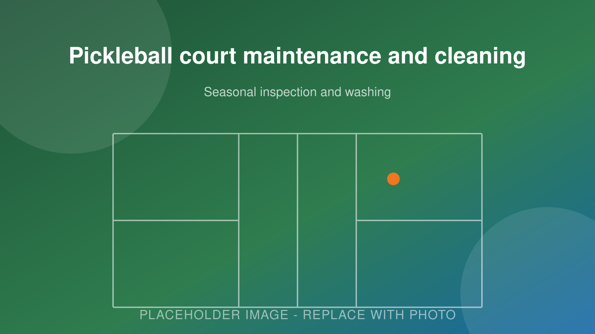
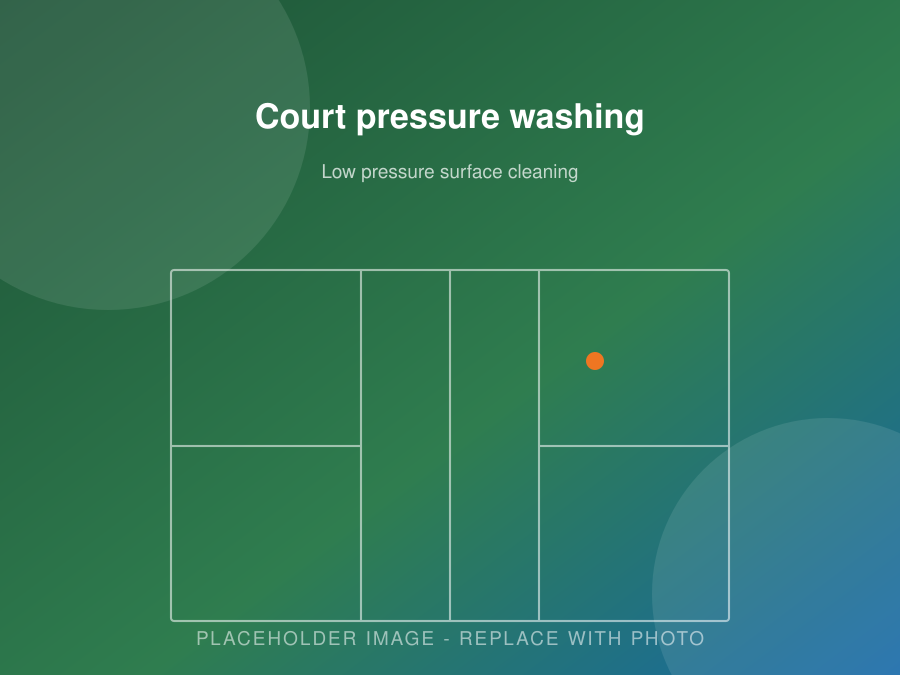

Court Care
Pickleball Court Maintenance
Cleaning, inspections, crack repair, net and fence work, and seasonal care built around Ontario winters. One-off visits or a scheduled programme.
- Low pressure washing and cleaning
- Crack sealing before winter
- Net, post and fence repairs
- Scheduled programmes for facilities
Book Consultation Call (705) 242-8236
Free estimates · Locally focused service · Clear, written quotes
Court Care
Maintenance That Adds Years to Your Court
A pickleball court is low maintenance compared to a pool or a big garden. It is not no maintenance.
The routine is short and mostly cheap, and it makes a real difference. A court that gets swept, washed twice a year and has its cracks sealed before winter will play well for years longer than one that gets ignored until something goes wrong.
We offer one-off maintenance visits and scheduled programmes for homeowners, clubs, schools, municipalities and property managers across Peterborough County.

What We Do
Our Court Maintenance Services
-
Cleaning & washing
Debris removal and a low pressure wash that lifts dirt, pollen, algae and moss without stripping the sand texture out of the coating.
-
Surface inspections
A walk of the whole court checking texture, colour, crack patterns, drainage behaviour and edges, with a written note of anything that needs attention.
-
Crack repair
Routing, cleaning and filling cracks with sport surface repair compound, ideally before winter so water cannot get in and freeze.
-
Net replacement
New nets, tension cables, centre straps and post hardware. Posts reset or replaced where they have shifted or corroded.
-
Fence repairs
Fabric retensioning, post and footing repair, gate hardware replacement and windscreen refitting after winter winds.
-
Colour refreshing
Where the coating is sound but the colour has faded, a refresh coat and reline restores appearance without a full resurfacing.
Do It Yourself
Routine Care You Can Handle Yourself
Keep debris off
Leaves, pine needles and grit are the enemy. Wet leaves left on a court stain the coating and hold moisture against it. Grit acts like sandpaper underfoot and wears the texture down faster. A leaf blower or a soft push broom is all you need.
Rinse regularly
A garden hose does most of the work. Rinsing after heavy pollen in spring or after a dusty stretch in summer keeps the surface clean and helps you see the court's actual condition.
Wash properly twice a year
Once in spring after the melt and once in fall before the cold. Use a court-safe cleaner, a soft brush and low pressure. This is also the best time to walk the court slowly and look for anything new.
Watch the drainage
After a decent rain, go look. Water should be off the surface within an hour. If you have a spot that holds a puddle, note where it is. Low spots are easy to fix during resurfacing and expensive to ignore.
Trim what shades the court
Branches overhanging a court drop debris, block the sun that dries the surface, and encourage moss. Keeping them cut back is one of the highest value things you can do.
Look after the net
Drop the tension when the court is out of use for long stretches. Take the net down and store it dry over winter. It costs nothing and doubles the life of the net.
Season by Season
Seasonal Maintenance in Ontario
Our climate is hard on outdoor surfaces. Here is what each season asks for.
| Season | What to do | Why it matters |
|---|---|---|
| Spring | Clear melt debris, wash the surface, inspect for new cracks and heaving, check drainage and clear swales, reinstall the net. | Winter damage shows up now. Catching it in April is far cheaper than in August. |
| Summer | Keep debris off, rinse as needed, watch for fading and wear in high-traffic zones, check net tension. | Peak use season. Small issues get worse fast under constant play. |
| Fall | Frequent leaf removal, full wash, seal every crack, trim overhanging branches, take the net down and store it. | This is the most important month of the year. Sealed cracks cannot fill with water and freeze. |
| Winter | Leave snow in place if you can. If you clear it, use a plastic shovel or brush only. Keep vehicles and machinery off the court. | Metal edges gouge acrylic. Vehicle weight on a frozen slab causes cracking. |
The one rule that matters most
Seal cracks before winter. Water in an open crack freezes, expands and widens it a little more every single freeze-thaw cycle. Peterborough gets a lot of those. A hairline crack sealed in the fall stays a hairline crack. Left open, it becomes a repair.
Scheduled Care
Maintenance Programmes for Facilities
If you manage courts for a school, club, municipality, condo corporation or retirement community, it usually makes sense to have the routine handled on a schedule rather than leaving it to whoever has time.
A typical programme includes:
- Spring opening visit with a full inspection and written condition report
- Mid-season check on nets, fencing, gates and surface wear
- Fall closing visit with a wash and crack sealing before freeze-up
- Priority scheduling for repairs identified during inspections
- A resurfacing forecast so the cost lands in a budget year you planned for
Tell us how many courts you have and how they are used and we will put together a schedule and a price.
Court Maintenance
Keep Your Court Playing Well
Book a maintenance visit or set up a seasonal schedule. Either way, the cheapest repair is always the one you do early.
Questions
Frequently Asked Questions
How often should I clean my pickleball court?
Sweep or blow off debris whenever leaves and grit build up, which in this region means often through the fall. A proper wash twice a year, spring and fall, keeps the surface clean and lets you spot problems early.
Can I pressure wash a pickleball court?
Yes, but at low pressure and with a wide fan tip held well back. High pressure strips the sand texture out of acrylic coating, which is exactly the part that gives you grip. When in doubt, less pressure and more water.
What should I do about snow?
You do not have to remove it. A properly built court is fine sitting under snow all winter. If you do clear it, use a plastic shovel or a brush. Never use a metal blade, chains or a machine with a steel edge on an acrylic surface.
How do I stop cracks from getting worse?
Seal them before winter. An open crack fills with water, the water freezes and expands, and the crack grows a little every freeze-thaw cycle. Sealing a hairline crack in October is cheap. Repairing the same crack after three winters is not.
How often do nets need replacing?
A good outdoor net typically lasts three to five years in this climate. Take it down and store it over winter and it lasts considerably longer. Check the tension cable and the centre strap each spring.
What about moss and algae?
Common on shaded courts, especially under trees. It makes the surface slippery and holds moisture against the coating. Clean it off with an appropriate court cleaner and trim back whatever is casting the shade.
Do you offer maintenance contracts?
Yes. For clubs, schools, municipalities and property managers we can set up a scheduled programme covering seasonal cleaning, inspections and minor repairs so it does not fall to your own staff.
When does maintenance stop being enough?
When the texture is worn smooth across the whole court, the colour has gone flat, or cracking is widespread rather than isolated. At that point resurfacing is the right answer. See our resurfacing page.
Service Area
Where We Build Pickleball Courts
We are based in Peterborough and most of our work is within about an hour of the city. If your property is not on the list below, call anyway. We travel for the right project.
- Peterborough
- Lakefield
- Bridgenorth
- Ennismore
- Selwyn
- Douro-Dummer
- Norwood
- Havelock
- Millbrook
- Keene
- Warsaw
- Buckhorn
- Cavan Monaghan
- Otonabee-South Monaghan
- Bailieboro
- Curve Lake
- Lindsay
- Kawartha Lakes
- Bobcaygeon
- Omemee
- Cobourg
- Port Hope
- Campbellford
- Hastings
- Apsley
- Young's Point
Peterborough & Selwyn Township
Peterborough, Lakefield, Bridgenorth, Ennismore, Young’s Point and Curve Lake. These are our closest jobs and usually our fastest scheduling. Lots north of the city often have room for a full 30 by 60 foot court with space to spare.
East & North of the City
Douro-Dummer, Warsaw, Norwood, Havelock, Apsley and Buckhorn. Rural acreage and waterfront properties here suit a court well, though soil and drainage conditions change a lot from lot to lot.
South & West
Millbrook, Cavan Monaghan, Keene, Bailieboro, Otonabee-South Monaghan, Omemee, Lindsay, Bobcaygeon and the wider City of Kawartha Lakes.
Northumberland & Beyond
Cobourg, Port Hope, Campbellford and Hastings. We take on work in these areas regularly, especially commercial builds and court resurfacing.
Free Estimate
Book a Court Maintenance Visit
Tell us about your project. We’ll get back to you with next steps and a time for a site visit.
- No cost, no pressure site visit
- Clear written quote with the work itemized
- Straight answers about what your site actually needs
- Serving Peterborough and the surrounding townships